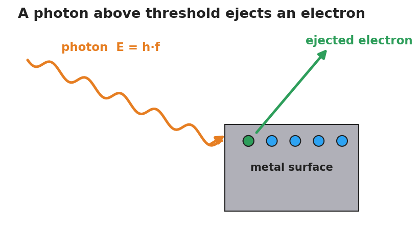

Unit: Modern Physics — Lesson 01: The Photoelectric Effect
Phenomenon
A very bright red laser shines on a metal surface — and nothing happens. Turn it brighter: still nothing. Then a dim violet light hits the same surface and electrons fly off instantly. Brightness lost to color.

Driving Question
What decides whether light can knock electrons off a surface — how bright it is, or its color (frequency)?
Notice & Wonder
Watch the dim violet light eject electrons while the bright red light cannot. Write two things you notice and two things you wonder.
Initial Model
Draw the light hitting the metal. Show what you think "brighter" does and what "higher frequency (more violet)" does. Then predict: which change will start ejecting electrons?
Investigate
Slide the frequency up and down to see when electrons begin to eject. Then change the intensity (brightness) and watch what it controls — the number of electrons or their energy. Predict before you slide.
Threshold frequency = 5.0 ×10¹⁴ Hz · Photon energy E = h·f = 2.65 ×10⁻¹⁹ J · Electron KE = 0.00 ×10⁻¹⁹ J · Electrons ejected: 0
Make It Make Sense
- A bright red beam ejects no electrons, but a dim violet beam does. What does this tell you about how light delivers its energy?
- Above the threshold, turning up the brightness adds more electrons but does not speed them up, while turning up the frequency speeds them up. Explain why, using the idea of a photon.
- A photon's energy is E = h·f. If you wanted to give each photon more energy, what would you change — and what would not work?
Stuck? Sentence frame
"A bright red light cannot eject electrons because ___, but a dim violet light can because ___, so the deciding factor is ___ , not ___."
Key Vocabulary (max 3)
- photon — a single packet (particle) of light energy; its energy is E = h·f, where h = 6.63×10⁻³⁴ J·s
- photoelectric effect — the ejection of electrons from a surface when light of high enough frequency strikes it
- threshold frequency — the lowest frequency of light that can eject electrons from a given surface; below it, no electrons leave regardless of intensity
Revise Your Model
Return to your Initial Model. Using the words photon and threshold frequency, rewrite your explanation of why brightness failed but color succeeded.
Return to the Phenomenon
Restate the laser demo in one sentence using photon and threshold frequency. (Target: "Violet photons cleared the threshold frequency and ejected electrons; red photons — even many of them — each fell below it.")
Exit Ticket + Closing Reflection
- A metal has a threshold frequency of 5.0×10¹⁴ Hz. (Reference: E = h·f, h = 6.63×10⁻³⁴ J·s.)
(a) Find the energy of one photon of light at 6.0×10¹⁴ Hz. (b) Will that light eject electrons? Explain. (c) Light at 4.0×10¹⁴ Hz is made twice as bright — what happens, and why? - Reflection: What is one idea about light that changed for you today? Who helped you make sense of it?